← 返回阅读库 · 原论文目录
论文讲解阅读文档 · 论文精读 · v238
分形生成模型 论文逐段精读
视频时长 00:32:53；讲解文字 9,762 字符；提取讲解画面 354 张。按视频原顺序阅读，每段文字保留时间戳。
文字来自整段视频的自动语音转写，按自然停顿分段，并与 PPT / 论文页面 / 演示画面对齐。未将讲解压缩为摘要；术语、数字和口述公式请结合画面及原论文核对。 阅读稿已校正规范部分明确术语误识别；原始逐字稿和每处修改记录另行保留。
讲解画面为源视频截图（640×360），不是可编辑 PPT 文件。全片按每秒 2 帧扫描内容变化，逐步展开页保留；连续动画保留代表画面。清晰度受源视频限制。
下载完整资料包 · 含离线 HTML、PDF、Word、全部 PPT 画面和字幕。
原论文与材料
Fractal Generative Models · 下载完整 PDF（13 页）
按时间阅读
00:00:00–00:00:01 · 画面 001
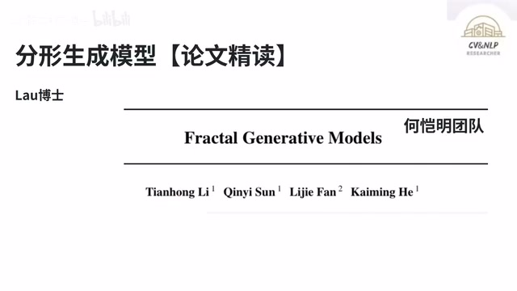
00:00:00–00:00:01 · 画面 001各位同学大家好，我是六博士。如果说 2025 年图像生成领域有什么不得不关注的论文，那必定有分形生成模型的一个位置。那这篇文章的论文呢，是何恺明团队在前不久于 arXiv 上面发布的。他有望呢，成为生成模型的一种新的方式，引领了新一代的视觉生成的潮流。
00:00:01–00:00:02 · 画面 002
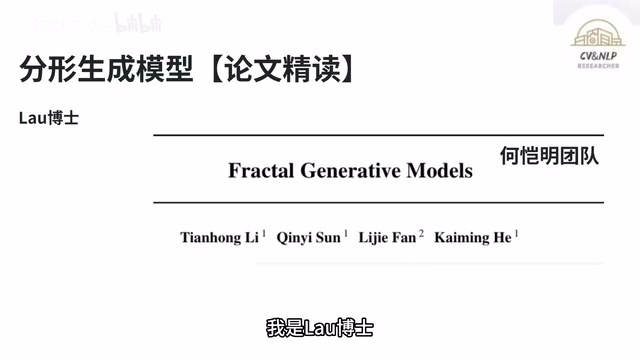
00:00:01–00:00:02 · 画面 00200:00:02–00:00:05 · 画面 003
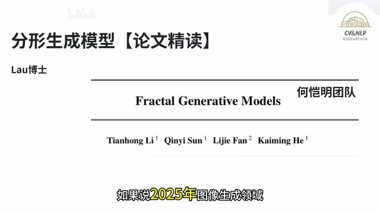
00:00:02–00:00:05 · 画面 00300:00:05–00:00:07 · 画面 004
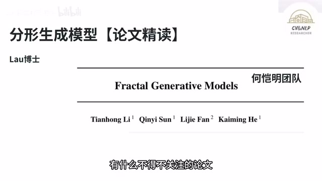
00:00:05–00:00:07 · 画面 00400:00:07–00:00:10 · 画面 005
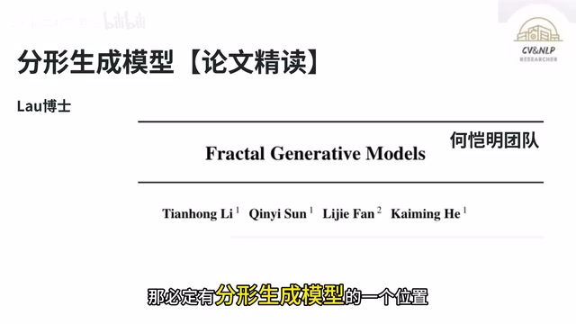
00:00:07–00:00:10 · 画面 00500:00:10–00:00:11 · 画面 006
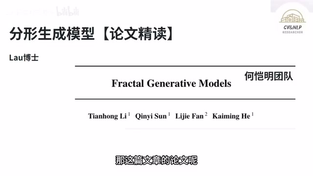
00:00:10–00:00:11 · 画面 00600:00:11–00:00:13 · 画面 007
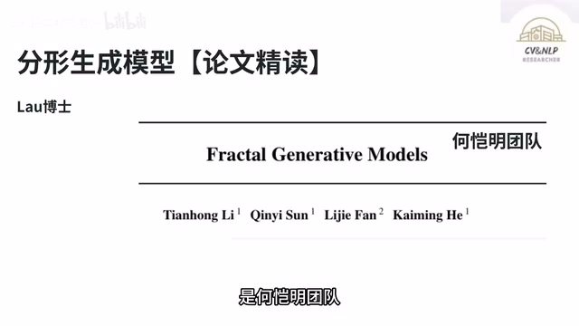
00:00:11–00:00:13 · 画面 00700:00:13–00:00:17 · 画面 008
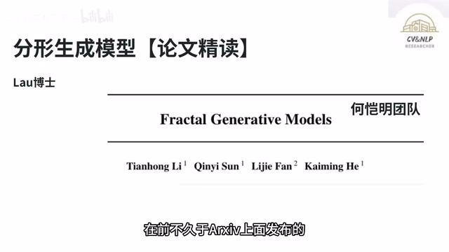
00:00:13–00:00:17 · 画面 00800:00:17–00:00:18 · 画面 009
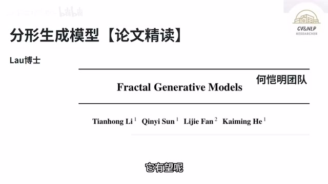
00:00:17–00:00:18 · 画面 00900:00:18–00:00:21 · 画面 010
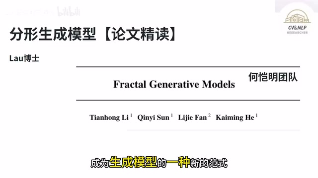
00:00:18–00:00:21 · 画面 01000:00:21–00:00:24 · 画面 011
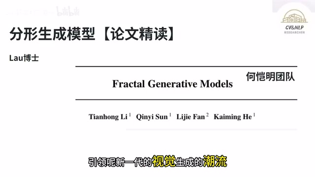
00:00:21–00:00:24 · 画面 011今天的这个讲解会以这个顺序去进行一个讲解。那么我们重点主要还是 focus 在这个文章的本身上面。有一些内容比如说像相关工作，或者说一些相对没有那么重要的内容，我们可能会略过。关于这篇文章的内容，我们会比较深入的进行一个分析。
00:00:24–00:00:26 · 画面 012
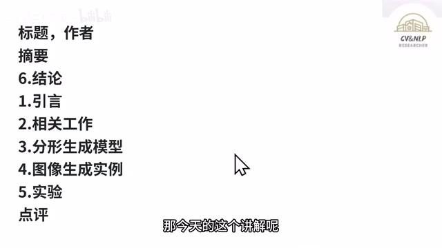
00:00:24–00:00:26 · 画面 01200:00:26–00:00:29 · 画面 013
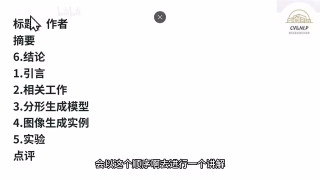
00:00:26–00:00:29 · 画面 01300:00:29–00:00:30 · 画面 014
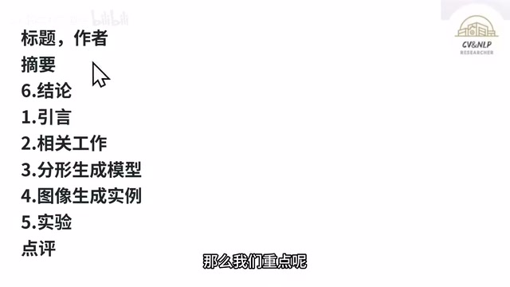
00:00:29–00:00:30 · 画面 01400:00:30–00:00:34 · 画面 015
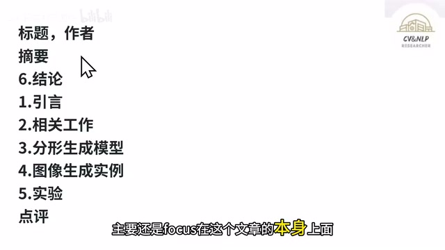
00:00:30–00:00:34 · 画面 01500:00:34–00:00:36 · 画面 016
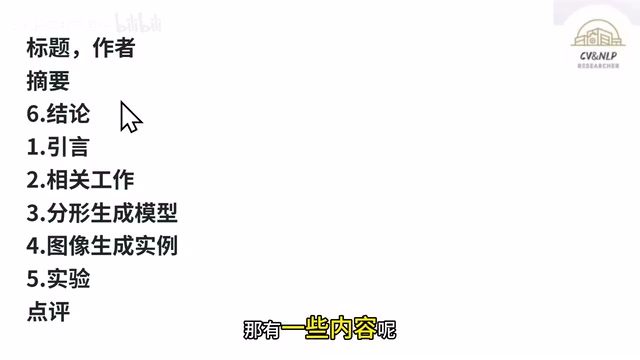
00:00:34–00:00:36 · 画面 01600:00:36–00:00:38 · 画面 017
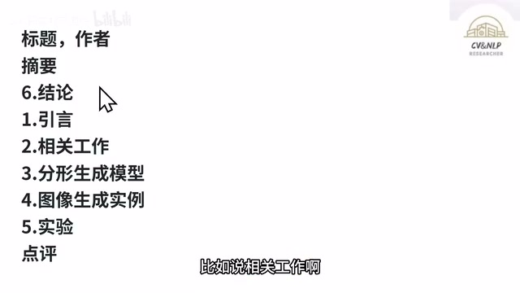
00:00:36–00:00:38 · 画面 01700:00:38–00:00:40 · 画面 018
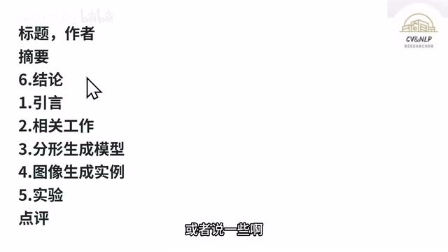
00:00:38–00:00:40 · 画面 01800:00:40–00:00:42 · 画面 019
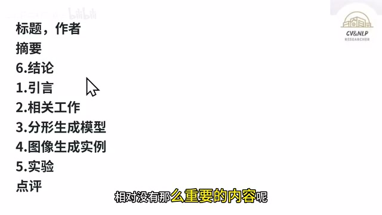
00:00:40–00:00:42 · 画面 01900:00:42–00:00:43 · 画面 020
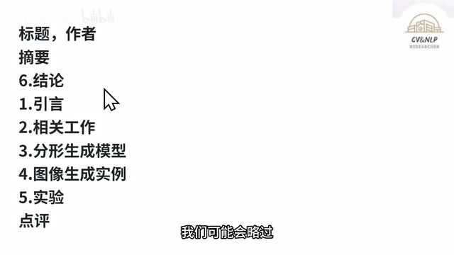
00:00:42–00:00:43 · 画面 02000:00:43–00:00:45 · 画面 021
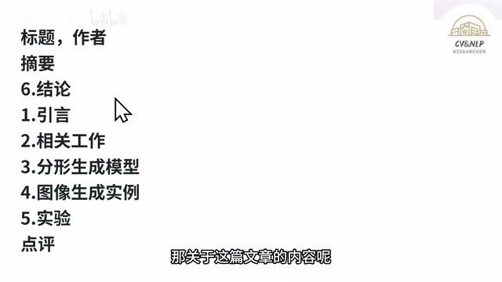
00:00:43–00:00:45 · 画面 02100:00:45–00:00:49 · 画面 022
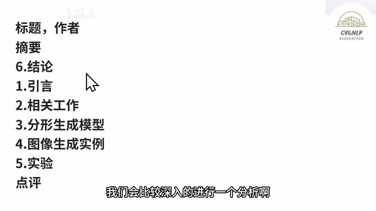
00:00:45–00:00:49 · 画面 022本期是我们论文精读系列的第一期，非常感谢大家的支持。作为云组会，我们大智慧保证每周有一篇高质量的论文精读发布出来，让每位同学在组会上都有东西可聊。欢迎了解我们，成为云组会的一员。首先我们来看一下标题跟作者，这篇文章的标题叫分形生成模型。
00:00:49–00:00:51 · 画面 023
00:00:49–00:00:51 · 画面 02300:00:51–00:00:53 · 画面 024
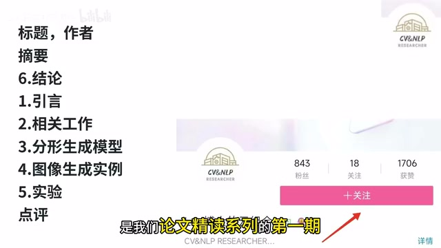
00:00:51–00:00:53 · 画面 02400:00:53–00:00:55 · 画面 025
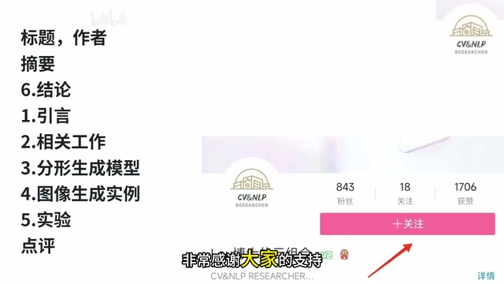
00:00:53–00:00:55 · 画面 02500:00:55–00:00:56 · 画面 026
00:00:55–00:00:56 · 画面 02600:00:56–00:00:57 · 画面 027
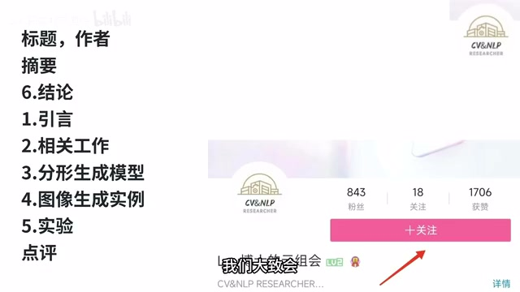
00:00:56–00:00:57 · 画面 02700:00:57–00:01:00 · 画面 028
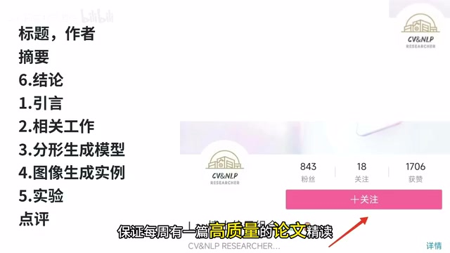
00:00:57–00:01:00 · 画面 02800:01:00–00:01:01 · 画面 029
00:01:00–00:01:01 · 画面 02900:01:01–00:01:05 · 画面 030
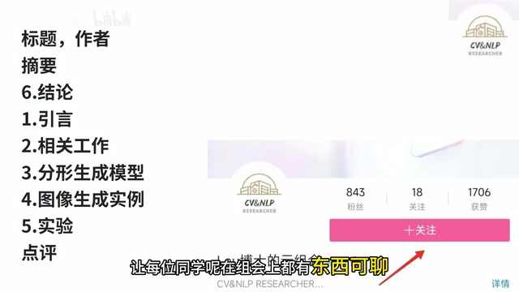
00:01:01–00:01:05 · 画面 03000:01:05–00:01:07 · 画面 031
00:01:05–00:01:07 · 画面 03100:01:07–00:01:11 · 画面 032
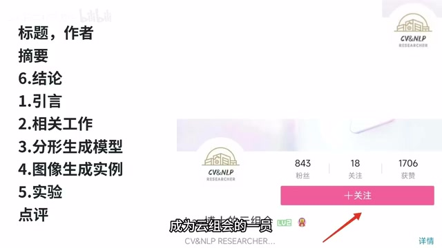
00:01:07–00:01:11 · 画面 03200:01:11–00:01:14 · 画面 033
00:01:11–00:01:14 · 画面 03300:01:14–00:01:17 · 画面 034
00:01:14–00:01:17 · 画面 03400:01:17–00:01:52 · 画面 035
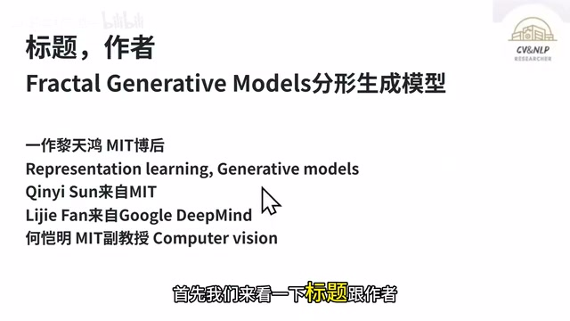
00:01:17–00:01:52 · 画面 035那它的这篇文章一共是有四个作者，那四个作者分别都是来自于 MIT。一座李天宏，他是 MIT 的一个博后，而他的主要的研究方向是 representation learning 跟 generating model。二座跟三座他们都会有 MIT 的一个背景，但是三座他留下的联系方式是 Google DeepMind。何恺明相信不需要做过多的介绍，他是 MIT 的副教授，他研究的领域是 Computer Vision。接下来我们来看一下摘要的部分，在摘要的第一句话以及第二句话，他讲模块化是计算机科学的基石，它将复杂的功能抽象为原子的这种级别的一个模块。
00:01:52–00:01:57 · 画面 036
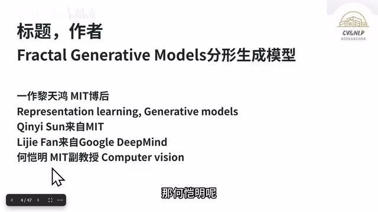
00:01:52–00:01:57 · 画面 03600:01:57–00:02:01 · 画面 037
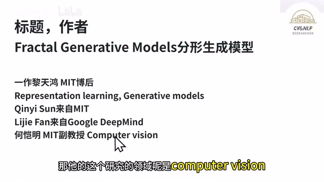
00:01:57–00:02:01 · 画面 03700:02:01–00:02:03 · 画面 038
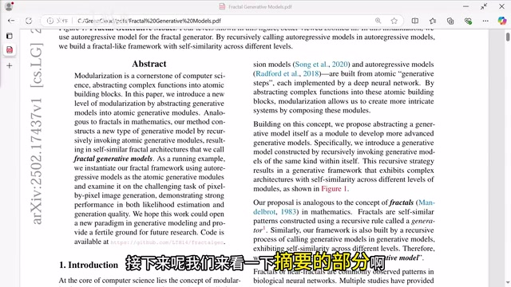
00:02:01–00:02:03 · 画面 03800:02:03–00:02:18 · 画面 039
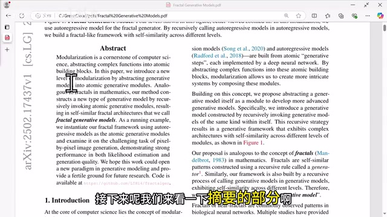
00:02:03–00:02:18 · 画面 039那在这篇文章呢，他那就是通过这个将生成模型啊抽象为原子的生成模块，引入了一种新的模块化的层次。那他在第一第二句里面啊，这篇文章呢，他就暗示了这种分形自相似啊去在这种以及递归啊在这个计算机里面的一个重要性。
00:02:18–00:02:24 · 画面 040
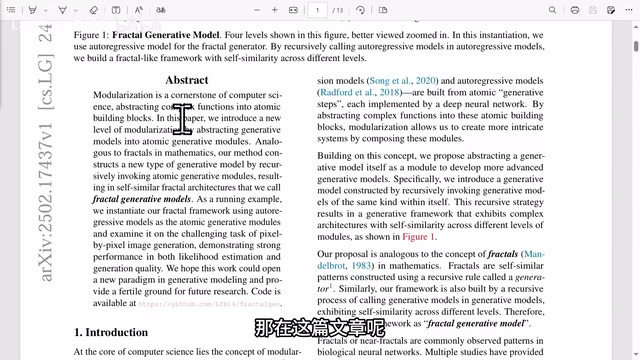
00:02:18–00:02:24 · 画面 04000:02:24–00:02:39 · 画面 041
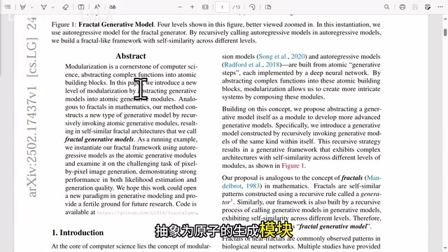
00:02:24–00:02:39 · 画面 04100:02:39–00:02:40 · 画面 042
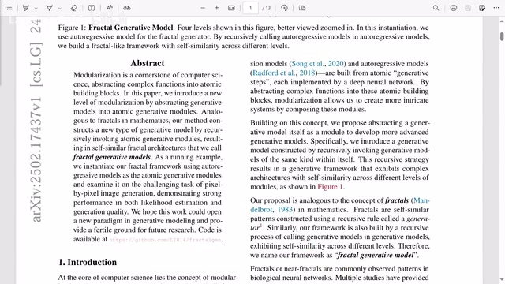
00:02:39–00:02:40 · 画面 042那紧接着他们这个文章提到，跟数学的分形类似，他们的这个方法通过这个递归的去调用原子生成的这个模块来构建一种新型的生成模型，从而称之为分形生成模型的自相似的分形架构。那他后面就提到说这个通过。
00:02:40–00:02:47 · 画面 043
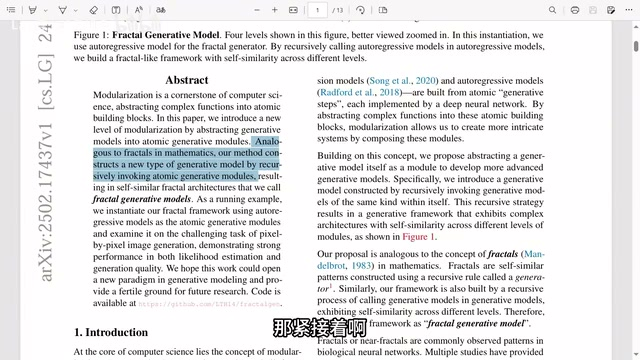
00:02:40–00:02:47 · 画面 04300:02:47–00:02:59 · 画面 044
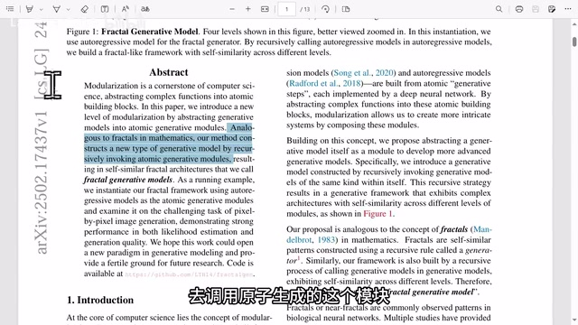
00:02:47–00:02:59 · 画面 04400:02:59–00:03:02 · 画面 045
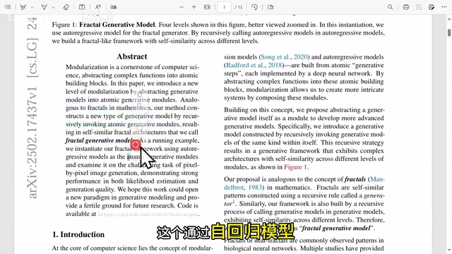
00:02:59–00:03:02 · 画面 045自回归模型作为原子生成模块来实现了分形的架构，并在逐像素的图像上面生成了挑战去做了测试，证明了他们的方法强大的性能，最后是留下了 GitHub 的地址。
00:03:02–00:03:15 · 画面 046
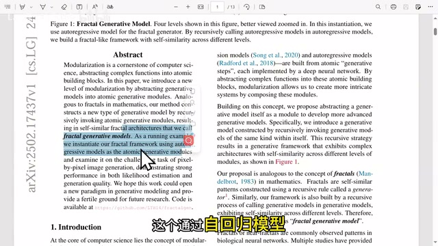
00:03:02–00:03:15 · 画面 04600:03:15–00:03:18 · 画面 047
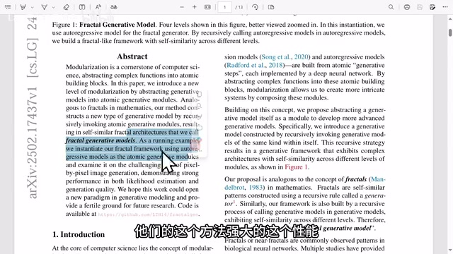
00:03:15–00:03:18 · 画面 04700:03:18–00:03:19 · 画面 048
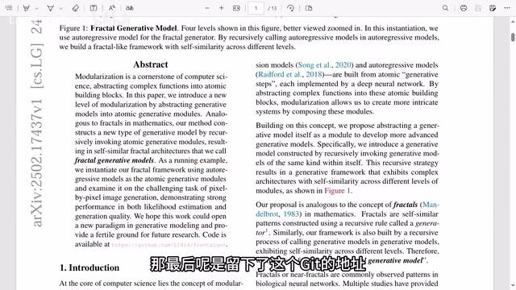
00:03:18–00:03:19 · 画面 04800:03:19–00:03:20 · 画面 049
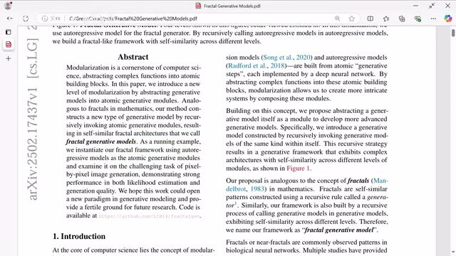
00:03:19–00:03:20 · 画面 049实际上在摘要里面已经都有提到了，就是这篇文章所强调的自回归自相似就递归，他们是把这种自回归模型是看作是原子的结构，然后用这种递归的这种形式去做一个它的一个结构层次，然后在这个逐向数的任务上面去做了验证。
00:03:20–00:03:22 · 画面 050
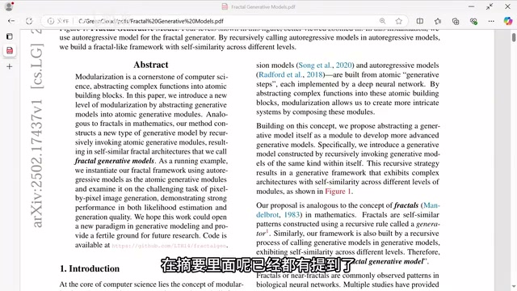
00:03:20–00:03:22 · 画面 05000:03:22–00:03:23 · 画面 051
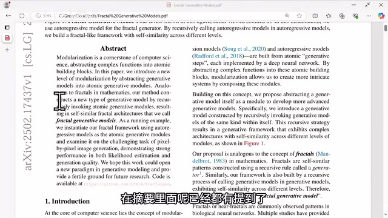
00:03:22–00:03:23 · 画面 05100:03:23–00:03:24 · 画面 052
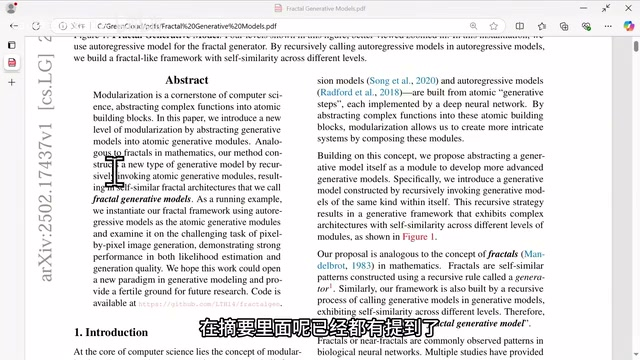
00:03:23–00:03:24 · 画面 05200:03:24–00:03:40 · 画面 053
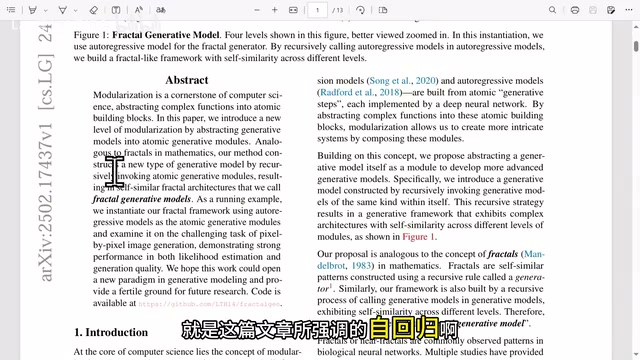
00:03:24–00:03:40 · 画面 05300:03:40–00:03:54 · 画面 054
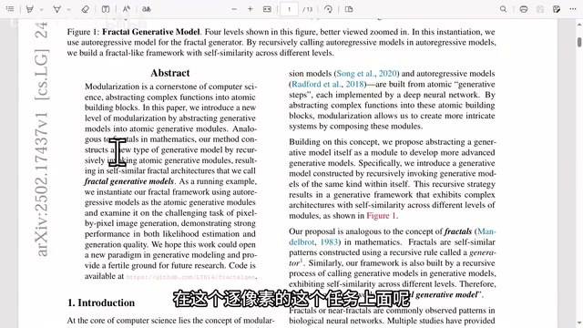
00:03:40–00:03:54 · 画面 054那在我读完这篇文章以后呢，我就非常清楚的知道，实际上这篇文章它主要是在这种类似于 object 层面的去做这个逐像素的这个任务，主要呢是在这个 ImageNet 上面用这个 ImageNet 的这个数据解去进行一个实现的。那它这个这个原码非常推荐大家来看，因为在阅读这篇。
00:03:54–00:04:00 · 画面 055
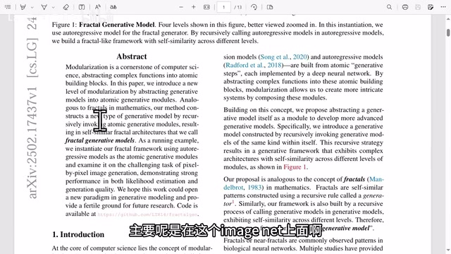
00:03:54–00:04:00 · 画面 05500:04:00–00:04:02 · 画面 056
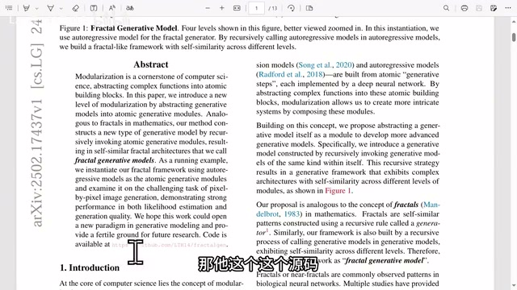
00:04:00–00:04:02 · 画面 05600:04:02–00:04:04 · 画面 057
00:04:02–00:04:04 · 画面 05700:04:04–00:04:05 · 画面 058
00:04:04–00:04:05 · 画面 058文章当中很多的理解是需要用到代码去有更深入的了解，当然刚刚这里也提到了作者希望通过他们提出来的形式它能够成为生成模型的一个新的方式，在介绍引言之前我想来介绍。
00:04:05–00:04:10 · 画面 059
00:04:05–00:04:10 · 画面 05900:04:10–00:04:12 · 画面 060
00:04:10–00:04:12 · 画面 06000:04:12–00:04:16 · 画面 061
00:04:12–00:04:16 · 画面 06100:04:16–00:04:18 · 画面 062
00:04:16–00:04:18 · 画面 06200:04:18–00:04:20 · 画面 063
00:04:18–00:04:20 · 画面 06300:04:20–00:04:25 · 画面 064
00:04:20–00:04:25 · 画面 06400:04:25–00:04:26 · 画面 065
00:04:25–00:04:26 · 画面 06500:04:26–00:04:27 · 画面 066
00:04:26–00:04:27 · 画面 06600:04:27–00:04:44 · 画面 067
00:04:27–00:04:44 · 画面 067一个例子就是阶乘，我们来看一下这个阶乘，来复习一下递归的一个概念。那阶乘呢，它是这样子的，阶乘呢包括两个部分，第一个呢是它的基本的一个情况，也就是 0 的阶乘啊就是 1，然后呢，另外一部分呢是非 0 的部分，也就是递归的部分，就是当 n 呢它大于 0 的时候啊，n 的阶乘呢就等于 n 乘上 n-1 的阶乘。
00:04:44–00:04:51 · 画面 068
00:04:44–00:04:51 · 画面 06800:04:51–00:04:53 · 画面 069
00:04:51–00:04:53 · 画面 06900:04:53–00:04:55 · 画面 070
00:04:53–00:04:55 · 画面 07000:04:55–00:04:56 · 画面 071
00:04:55–00:04:56 · 画面 07100:04:56–00:05:07 · 画面 072
00:04:56–00:05:07 · 画面 072那因此的话呢，这个就是一个递归的一个基本的一个概念啊，那在后面的文章呢我们是需要要用到这个概念的，另外一个是要跟大家来讲一下自回归模型的一个大致的实现的一个情况，那现在呢我们在这里列举了一个例子，这是一个二乘二的一个灰度图像的一个案例啊那。
00:05:07–00:05:08 · 画面 073
00:05:07–00:05:08 · 画面 07300:05:08–00:06:51 · 画面 074
00:05:08–00:06:51 · 画面 074这个像素点的一个范围呢是 0 到 255，那这个案例的话呢是想跟大家来介绍一下就是当这个智慧自回归模型它是怎么去完成一个逐像素生成的这么一个任务的，我们可以看到在这个点啊，比如说我们现在是二乘二嘛。我要求第一个点它就会根据 0 到 255 的像素去得到不同的一个概率的分布，我们最简单的我们就取了假设假设就是三个像素 128 129 1130 它们的概率加起来都是 1，实际上是 0 到 255 了，我们为了简化就只列三个，显然 128 的概率。
它是 0.5 嘛就是当这个 value 等于 128 的时候这个概率是最大的那我们就会取这个 128 作为 X11 的这个像素点的这个 valueOK 那这个做完了以后呢就模型啊就要去预测下一个点的这个像素值应该是多少那这个呢我们就看啊在 X11 等于 128 的这个情况下预测 X12那这个下面又有三个这个值啊它发现了这个 130 这个位置啊它的这个概率是 0.6 非常大的概率啊因此呢就会把 X12 的这个位置呢取到 130 那 X13 呢这个位置呢它就要基于 X11 跟 X12 的这个背景下去取得这个像素值那发现呢 X113 呢在 132 的这个
00:06:51–00:06:52 · 画面 075
00:06:51–00:06:52 · 画面 07500:06:52–00:07:05 · 画面 076
00:06:52–00:07:05 · 画面 076就是这个像素的这个位置啊，取得 132 这个 value 的时候，它的这个概率啊高达 0.7，因此呢就是 132 了，X13 这个位置，那后面的像素以此类推啊，那这个讲这个案例呢，就是为了来帮助大家在后面更好的去理解啊，这个自回归模型啊，在这个递归这个过程当中，它的运作的一个情况是如何的
00:07:05–00:07:08 · 画面 077
00:07:05–00:07:08 · 画面 07700:07:08–00:07:27 · 画面 078
00:07:08–00:07:27 · 画面 078紧接着我们来看一下他在第六章里面的 discussion 跟 conclusion 里面他们讲了一些什么话，前面的部分他是讲了逐像素的生成证明了分形模型的有效性，下一个他是说了将复杂的数据分布划分成可管理的子问题，他强调多个尺寸的。
00:07:27–00:07:28 · 画面 079
00:07:27–00:07:28 · 画面 07900:07:28–00:07:30 · 画面 080
00:07:28–00:07:30 · 画面 08000:07:30–00:07:37 · 画面 081
00:07:30–00:07:37 · 画面 08100:07:37–00:07:38 · 画面 082
00:07:37–00:07:38 · 画面 08200:07:38–00:07:56 · 画面 083
00:07:38–00:07:56 · 画面 083shape 的这种图形它是怎么样去分开来形成这种子问题或者说是模块化问题去进行一个处理，然后希望说分形的这种生成模型它能够去对其他的一些领域它有一些新的一些启发。
00:07:56–00:08:00 · 画面 084
00:07:56–00:08:00 · 画面 08400:08:00–00:08:02 · 画面 085
00:08:00–00:08:02 · 画面 08500:08:02–00:08:06 · 画面 086
00:08:02–00:08:06 · 画面 08600:08:06–00:08:07 · 画面 087
00:08:06–00:08:07 · 画面 08700:08:07–00:08:10 · 画面 088
00:08:07–00:08:10 · 画面 08800:08:10–00:08:14 · 画面 089
00:08:10–00:08:14 · 画面 089同时前文后面文章也提到分形生成模型跟其他的模型一样，它同样是存在一些负面应用的威胁，在两个大的一个摘要以及一个
00:08:14–00:08:18 · 画面 090
00:08:14–00:08:18 · 画面 09000:08:18–00:08:22 · 画面 091
00:08:18–00:08:22 · 画面 09100:08:22–00:08:25 · 画面 092
00:08:22–00:08:25 · 画面 09200:08:25–00:08:27 · 画面 093
00:08:25–00:08:27 · 画面 09300:08:27–00:08:28 · 画面 094
00:08:27–00:08:28 · 画面 09400:08:28–00:08:30 · 画面 095
00:08:28–00:08:30 · 画面 09500:08:30–00:08:33 · 画面 096
00:08:30–00:08:33 · 画面 096这个讨论呢，跟这个 conclusion 我们讲完以后呢，我们就回到 introduction，也就是引言这个部分。那实际上呢，在引言的这个地段呢，它主要呢是强调了 DNN，也就是说深度的这个神经网络啊，是以这个 layer 呢作为这个模块化的这个单元。然后呢，还提到呢就是说这个
00:08:33–00:08:39 · 画面 097
00:08:33–00:08:39 · 画面 09700:08:39–00:08:40 · 画面 098
00:08:39–00:08:40 · 画面 09800:08:40–00:08:42 · 画面 099
00:08:40–00:08:42 · 画面 09900:08:42–00:08:44 · 画面 100
00:08:42–00:08:44 · 画面 10000:08:44–00:08:50 · 画面 101
00:08:44–00:08:50 · 画面 10100:08:50–00:08:51 · 画面 102
00:08:50–00:08:51 · 画面 10200:08:51–00:08:53 · 画面 103
00:08:51–00:08:53 · 画面 103扩散模型跟自回归模型是以这种生成步骤去作为一个模块化 DNN，非常好理解。我们以这种
00:08:53–00:09:04 · 画面 104
00:08:53–00:09:04 · 画面 104比如说卷积的神经网络做图像分类的唯一一个案例，它是不是会有一个卷积层，然后有分类层，或者说是有池化层各自的这些层，它是负责不同的工作。比如说可能卷积层是提取特征，池化层是要去对特征去做一些精简，然后分类层当然就是要去做分类了。
00:09:04–00:09:55 · 画面 105
00:09:04–00:09:55 · 画面 105那如果是扩散模型或者是自回归模型，那么我们可以就是讲扩散模型它就是一个 de-noise 跟这个就是降噪，还有一个就是加噪声的一个过程。那这些过程的里面的生成步骤都是对应的是一个 DNN 的这个模型。那像自回归模型就是刚刚我们前面有提到的，它是怎么样一步一步去做这种预测的，那它也可以被视作是模块化。
00:09:55–00:09:57 · 画面 106
00:09:55–00:09:57 · 画面 106那么来到第二段，基于扩散模型跟智慧柜模型的这种描述，将生成的模型本身抽象成一个模块。我们来看一下这里有一个非常明显的 Figure 1，看一下这个 Figure 1 到底是做了一些什么样的一个启发。我们可以看得到这个图一，这个图一我们粗一看说实话非常有难度，并没有
00:09:57–00:10:04 · 画面 107
00:09:57–00:10:04 · 画面 10700:10:04–00:10:09 · 画面 108
00:10:04–00:10:09 · 画面 10800:10:09–00:10:10 · 画面 109
00:10:09–00:10:10 · 画面 10900:10:10–00:10:12 · 画面 110
00:10:10–00:10:12 · 画面 11000:10:12–00:10:17 · 画面 111
00:10:12–00:10:17 · 画面 11100:10:17–00:10:18 · 画面 112
00:10:17–00:10:18 · 画面 11200:10:18–00:10:20 · 画面 113
00:10:18–00:10:20 · 画面 11300:10:20–00:10:55 · 画面 114
00:10:20–00:10:55 · 画面 114很容易的去看得出来这个是有什么样的一个内容。但是呢，我们去先看这个 B 图，这 B 图很明显，我们发现了这个圆圈就是这个灰色的圆圈呢，跟这个三角形它这个结构包的这个矩形的一个灰色是一个递归的一个结构，就是它这个框里面又有它，然后这下面的又有它。所以呢，它这个图呢，它主要是要给我们展示的就是一种具有递归这样子一个意义的一个分形的生成模型的结构。他主要是强调了这么一点啊。那我们接着往下看，那到了这个引言的这个第三段呢，就正式的去他引入了这个在数学上的这个分形的一个概念。那我想呢，去给到大家来看一个案例啊，就更好的去理解这一段话。
00:10:55–00:10:56 · 画面 115
00:10:55–00:10:56 · 画面 11500:10:56–00:10:59 · 画面 116
00:10:56–00:10:59 · 画面 11600:10:59–00:11:01 · 画面 117
00:10:59–00:11:01 · 画面 11700:11:01–00:11:08 · 画面 118
00:11:01–00:11:08 · 画面 11800:11:08–00:11:09 · 画面 119
00:11:08–00:11:09 · 画面 11900:11:09–00:11:12 · 画面 120
00:11:09–00:11:12 · 画面 120在这里我们可以看得到，我展示了三个的这个一三角形所组成的一个分形的一个模型。大家可以看得到，在第二个的图里面是这个三角
00:11:12–00:11:54 · 画面 121
00:11:12–00:11:54 · 画面 121它是由它来组成的，然后它们是第二个图是第一个图的边上面是它的三倍，然后它的三角就是由它来组成的。所以它分形的模型它就是有一种自重复，然后又是你不停的去放大的话，就会看到一直都是有前面的这些模型。比如说你看如果要求这个的话，实际上就可以用它来进行一个类比。
00:11:54–00:11:55 · 画面 122
00:11:54–00:11:55 · 画面 122那么紧接着第四第五段，作者呢就开始从这个生物啊，以及这个大脑啊等等的这些方面的去讨论了这个分形在这些领域里面的一些体现。那你可以看得到，在这个 Biological 里面的这个 665，它都有蕴含着这个分形的概念在里面。
00:11:55–00:11:56 · 画面 123
00:11:55–00:11:56 · 画面 12300:11:56–00:11:57 · 画面 124
00:11:56–00:11:57 · 画面 12400:11:57–00:11:59 · 画面 125
00:11:57–00:11:59 · 画面 12500:11:59–00:12:03 · 画面 126
00:11:59–00:12:03 · 画面 12600:12:03–00:12:07 · 画面 127
00:12:03–00:12:07 · 画面 12700:12:07–00:12:11 · 画面 128
00:12:07–00:12:11 · 画面 12800:12:11–00:12:12 · 画面 129
00:12:11–00:12:12 · 画面 12900:12:12–00:12:16 · 画面 130
00:12:12–00:12:16 · 画面 13000:12:16–00:12:17 · 画面 131
00:12:16–00:12:17 · 画面 13100:12:17–00:12:18 · 画面 132
00:12:17–00:12:18 · 画面 132又比如说在这个自然界里面这个图像，它是可以有自身来构成的。刚刚前面是提到生物里面的，另外一个是现在提到了自然界，比如说像一些晶体，又比如说像一些雪花，它实际上都有分形的规律的存在。
00:12:18–00:12:22 · 画面 133
00:12:18–00:12:22 · 画面 13300:12:22–00:12:37 · 画面 134
00:12:22–00:12:37 · 画面 13400:12:37–00:12:39 · 画面 135
00:12:37–00:12:39 · 画面 135作者列举了不同领域的分形的概念以后，终于就进入到了这个文章的一个正题，就是他提到了这个逐像素的一个生成的一个问题。他们认为现在的这些方法效果都不够好，比如说对于一种非顺序结构的这种数据建模，比如说像分子结构或者说是蛋白质这种生物的神经网络，这都是非常有挑战性的。
00:12:39–00:12:41 · 画面 136
00:12:39–00:12:41 · 画面 13600:12:41–00:12:44 · 画面 137
00:12:41–00:12:44 · 画面 13700:12:44–00:12:48 · 画面 138
00:12:44–00:12:48 · 画面 13800:12:48–00:12:50 · 画面 139
00:12:48–00:12:50 · 画面 13900:12:50–00:12:52 · 画面 140
00:12:50–00:12:52 · 画面 14000:12:52–00:12:53 · 画面 141
00:12:52–00:12:53 · 画面 14100:12:53–00:12:59 · 画面 142
00:12:53–00:12:59 · 画面 14200:12:59–00:13:00 · 画面 143
00:12:59–00:13:00 · 画面 14300:13:00–00:13:05 · 画面 144
00:13:00–00:13:05 · 画面 14400:13:05–00:13:09 · 画面 145
00:13:05–00:13:09 · 画面 145但是作者也非常有意思他们也仅仅是在这种 object 层面也就是我们广泛意义上说的 computer vision 的一些基础的任务他们在这上面做了验证他也并没有去对这些很难的问题去做验证他最后的 introduction 最后的这一段他就主要是强调让我们来看一下这个图
00:13:09–00:13:10 · 画面 146
00:13:09–00:13:10 · 画面 14600:13:10–00:13:30 · 画面 147
00:13:10–00:13:30 · 画面 14700:13:30–00:13:31 · 画面 148
00:13:30–00:13:31 · 画面 14800:13:31–00:13:33 · 画面 149
00:13:31–00:13:33 · 画面 149这个图 2 里面我们看得到，它这里描述的是一个 256x256 的一个 shape 的一个图片生成的一个过程。比如说大家可以看得到，我们这个图如果从左到右来看，然后从下到上也或者说是从上到下，它是一个月区完整的一个过程。
00:13:33–00:13:37 · 画面 150
00:13:33–00:13:37 · 画面 15000:13:37–00:14:28 · 画面 151
00:13:37–00:14:28 · 画面 151我们可以看啊，如果说啊，我们要求这个框柱的这个像素啊，那它的这个完整的在下一个层级的它完整的这个像素块是在这里的，那如果说它又要去求这个圈柱的这个像素块的话呢啊，这个完整的像素块是在这里，那就要先求的这个像素块是在哪里，那这个像素块它对下来呢，就是 RGB 啊，三个通道啊，对应的三个通道，那实际上呢，这个就是一个 autoregressive，就是这个自回归模型啊一个生成从无到有的一个过程，就是在这张图上面是有所体现的
00:14:28–00:14:30 · 画面 152
00:14:28–00:14:30 · 画面 152那到这里的话呢，introduction 大致上就介绍了这么多内容，那接下来的话呢，就是这个 relative word，那 relative word 呢，会比较简明的去带过一些概念，比如说啊，这个 relative word 它主要是介绍了四个，首先它介绍了分形，介绍了这个层次化的一个表征，介绍了这个层次化的生成模型，以及呢
00:14:30–00:14:31 · 画面 153
00:14:30–00:14:31 · 画面 15300:14:31–00:14:36 · 画面 154
00:14:31–00:14:36 · 画面 15400:14:36–00:14:37 · 画面 155
00:14:36–00:14:37 · 画面 15500:14:37–00:14:44 · 画面 156
00:14:37–00:14:44 · 画面 15600:14:44–00:14:46 · 画面 157
00:14:44–00:14:46 · 画面 15700:14:46–00:14:48 · 画面 158
00:14:46–00:14:48 · 画面 15800:14:48–00:14:50 · 画面 159
00:14:48–00:14:50 · 画面 15900:14:50–00:14:54 · 画面 160
00:14:50–00:14:54 · 画面 160下面的这个模块化的神经网络的设计，那这些都有一些什么内容呢，我们可以看一下 PPT，像刚才分形啊，我们已经讲了很多了，讲到这个什么雪花啊，晶体啊，等等等等啊，生物界的还有染色体啊，蛋白质等等，那比如说这个图像里面呢，它就是这个工作呢，通过就是在图像里面的去验证它到底这个分形的这个效果它是如何的
00:14:54–00:14:57 · 画面 161
00:14:54–00:14:57 · 画面 16100:14:57–00:15:01 · 画面 162
00:14:57–00:15:01 · 画面 16200:15:01–00:15:02 · 画面 163
00:15:01–00:15:02 · 画面 16300:15:02–00:15:23 · 画面 164
00:15:02–00:15:23 · 画面 164我们再看下一个部分，它是讲到了一些层次化表征的一些工作，这些工作包括说传统的方法可转向的滤波器，还有一些尺度不变的特别转化等等，这些方法 CNN 的这些方法我们都比较熟悉，像什么 FPN 特征金字塔，如果是非 CNN 的方法还有 Swin Transformer 等等
00:15:23–00:15:44 · 画面 165
00:15:23–00:15:44 · 画面 16500:15:44–00:15:45 · 画面 166
00:15:44–00:15:45 · 画面 16600:15:45–00:15:47 · 画面 167
00:15:45–00:15:47 · 画面 16700:15:47–00:16:00 · 画面 168
00:15:47–00:16:00 · 画面 168那还有提到了一些层次化的这个生成模型，那这个方面的相对来说可能没有前面的这个这么热门，它主要的就是介绍了这四个工作
00:16:00–00:16:17 · 画面 169
00:16:00–00:16:17 · 画面 169模块化的神经网络架构设计回应了 Introduction 前面的部分就是非常著名的几个网络 GoogleNet、Res2Bot、Transformer、MAR 还有分形的网络我们回到论文就已经到了第三章的部分了
00:16:17–00:16:19 · 画面 170
00:16:17–00:16:19 · 画面 17000:16:19–00:16:24 · 画面 171
00:16:19–00:16:24 · 画面 171那在第三章的这个部分呢它主要是讲了两个点就是这个总体的部分就讲 3.1 啊这个动机跟直觉就是它是怎么把这个分形生成模型的提出来的以及呢这个以自回归模型作为生成器啊主要就描述了这两块内容
00:16:24–00:16:26 · 画面 172
00:16:24–00:16:26 · 画面 17200:16:26–00:16:29 · 画面 173
00:16:26–00:16:29 · 画面 17300:16:29–00:16:30 · 画面 174
00:16:29–00:16:30 · 画面 17400:16:30–00:16:32 · 画面 175
00:16:30–00:16:32 · 画面 17500:16:32–00:16:35 · 画面 176
00:16:32–00:16:35 · 画面 17600:16:35–00:16:39 · 画面 177
00:16:35–00:16:39 · 画面 17700:16:39–00:16:41 · 画面 178
00:16:39–00:16:41 · 画面 17800:16:41–00:16:42 · 画面 179
00:16:41–00:16:42 · 画面 179那他的这个动机呢，实际上他又在这一段又讲了一遍，就是源自于这种自然界的一个分形的结构的一个启发，那他在接下来的这里呢，用了一个数学的这种表达，就讲了说，如果我们现在有一个这个 GI 的这个生成器分形的一个生成器，那我要去求下一级的这个
00:16:42–00:16:43 · 画面 180
00:16:42–00:16:43 · 画面 18000:16:43–00:16:44 · 画面 181
00:16:43–00:16:44 · 画面 18100:16:44–00:17:17 · 画面 182
00:16:44–00:17:17 · 画面 182结果的时候，那我就需要知道 XI 啊，也就是上一级的一个 Data，那它就是有这种嵌套啊，或者说是递归的这么一种思想在里面，那因为了通过这样子的一个递归的这个调用啊，他们认为就是每一个的这种生成器啊，它可以从单个输入呢产生多个的输出，那这个分形的框架呢，可以在要求是线性数量的这种递归的级别的情况下能实现的就是输出了这种
00:17:17–00:17:19 · 画面 183
00:17:17–00:17:19 · 画面 18300:17:19–00:17:21 · 画面 184
00:17:19–00:17:21 · 画面 18400:17:21–00:17:22 · 画面 185
00:17:21–00:17:22 · 画面 18500:17:22–00:17:52 · 画面 186
00:17:22–00:17:52 · 画面 186比较多的这个内容啊，适合呢，就是用相对较少的这个生成器呢来模拟更高维的这个数据，那怎么理解这段话呢，那实际上意思就是说，它的这个递归的这种深度啊，它是一个常数级的，就是比如说像这篇文章呢，它就是只有四个层次或者是五个层次啊，那这个是有限次数的，但是他认为啊
00:17:52–00:18:10 · 画面 187
00:17:52–00:18:10 · 画面 187会有这种比如说去生成更高维度像这种蛋白质啊等等这种结构比较复杂的当然他没有验证啊，我再次前调紧接着的这一段呢，他是认为啊，这个神经网络呢，就可以从这个数据里面呢，把这个递归的这个规则呢学到
00:18:10–00:18:12 · 画面 188
00:18:10–00:18:12 · 画面 18800:18:12–00:18:14 · 画面 189
00:18:12–00:18:14 · 画面 18900:18:14–00:18:20 · 画面 190
00:18:14–00:18:20 · 画面 19000:18:20–00:18:23 · 画面 191
00:18:20–00:18:23 · 画面 191那接下来这个 3.2 就开始介绍了以这个自回归模型作为这个分形生成器那这个第一段的这个内容呢就非常接近我们刚刚讲它是怎么样去生成这个像素点的这个
00:18:23–00:18:24 · 画面 192
00:18:23–00:18:24 · 画面 19200:18:24–00:18:29 · 画面 193
00:18:24–00:18:29 · 画面 19300:18:29–00:18:33 · 画面 194
00:18:29–00:18:33 · 画面 19400:18:33–00:18:39 · 画面 195
00:18:33–00:18:39 · 画面 195它比如说现在有这个 random variable 就是有这个随机变量 x1 到 xm 那它要求这个玩意就是在这个 c 的情况下去了解这个 x 的这个概率去做这么一个操作去怎么求其实跟我们刚刚去聊到的这个案例非常的相似就是这个智慧柜的模型
00:18:39–00:18:42 · 画面 196
00:18:39–00:18:42 · 画面 19600:18:42–00:18:55 · 画面 197
00:18:42–00:18:55 · 画面 19700:18:55–00:18:59 · 画面 198
00:18:55–00:18:59 · 画面 19800:18:59–00:19:01 · 画面 199
00:18:59–00:19:01 · 画面 199那第二段里面呢它是有聊到啊就是讲说这个 K 一个 K 一个 N 那这个 K 呢是这个序列的这个长度啊 N 呢就是这个递归的层次
00:19:01–00:19:03 · 画面 200
00:19:01–00:19:03 · 画面 20000:19:03–00:19:23 · 画面 201
00:19:03–00:19:23 · 画面 201实际上它这个部分就是开始去聊到这个它递归的它应该是怎么样的一个计算那我们其实举一个简单的例子啊这里就很容易了解了那实际上递归会相对来说会比较复杂但这里先不讲开我们主要讲一个案例假如说啊我们有一张图是二乘二的
00:19:23–00:19:52 · 画面 202
00:19:23–00:19:52 · 画面 202那这个 K 的这个它的这个长度它应该就是 4 然后这个 N 的递归的这个层次呢按照这个里面的来讲就是 4 层或是 5 层当然这个它 4 层 5 层它的这个 shape 对应到这篇文章是 64x64 还有 256x256 它主要呢强调的就是一个递归的过程
00:19:52–00:19:53 · 画面 203
00:19:52–00:19:53 · 画面 203在这里他还提到他们的这个方法用到的是一个分治法相对于这种单一的大型的自回归模型是更加的高效的分治法的话可能可以认为它是有多个小模型同时去进行工作的
00:19:53–00:19:55 · 画面 204
00:19:53–00:19:55 · 画面 20400:19:55–00:20:24 · 画面 205
00:19:55–00:20:24 · 画面 205它可以是在同一层级里面去做到一个并行，那现在接下来他们又再次强调要用这个逐像素生成的这个案例去展示一下他们的这个效果到底是怎么样的。那现在的话呢，我们就到了第四章了。那这个第四章呢，它是讲了这个逐像生成的这个实例，那就是有
00:20:24–00:20:26 · 画面 206
00:20:24–00:20:26 · 画面 20600:20:26–00:20:28 · 画面 207
00:20:26–00:20:28 · 画面 20700:20:28–00:20:30 · 画面 208
00:20:28–00:20:30 · 画面 20800:20:30–00:20:32 · 画面 209
00:20:30–00:20:32 · 画面 20900:20:32–00:20:35 · 画面 210
00:20:32–00:20:35 · 画面 21000:20:35–00:20:37 · 画面 211
00:20:35–00:20:37 · 画面 21100:20:37–00:20:43 · 画面 212
00:20:37–00:20:43 · 画面 212五个小的章节分别是这个逐像素的生成然后它的这个架构以及呢跟这个尺度空间自回归模型的这个关系还有呢这个叫 4.4 跟长序列的这个建模的一个关系还有这个 implementation 这个实现我们来一个一个慢慢看
00:20:43–00:20:47 · 画面 213
00:20:43–00:20:47 · 画面 21300:20:47–00:20:50 · 画面 214
00:20:47–00:20:50 · 画面 21400:20:50–00:20:54 · 画面 215
00:20:50–00:20:54 · 画面 21500:20:54–00:20:55 · 画面 216
00:20:54–00:20:55 · 画面 21600:20:55–00:21:00 · 画面 217
00:20:55–00:21:00 · 画面 21700:21:00–00:21:01 · 画面 218
00:21:00–00:21:01 · 画面 21800:21:01–00:21:05 · 画面 219
00:21:01–00:21:05 · 画面 21900:21:05–00:21:09 · 画面 220
00:21:05–00:21:09 · 画面 2204.1 主要讲了两个内容就是重复了跟前面的一些内容有所重复就是讲 RGB 的图像的它是要生成 RGB 图像的所有像素点然后第二段它就是提到了说像这种分子结构蛋白质生物神经网络
00:21:09–00:21:12 · 画面 221
00:21:09–00:21:12 · 画面 22100:21:12–00:21:19 · 画面 222
00:21:12–00:21:19 · 画面 22200:21:19–00:21:20 · 画面 223
00:21:19–00:21:20 · 画面 22300:21:20–00:21:38 · 画面 224
00:21:20–00:21:38 · 画面 224在这个足像素的这个生成的任务里面，是最具有这种挑战性的，当然了，我们再次强调，它只做了上面的这个实验，也就是我们传统意义上的这种识别类的这种 RGB 的这种图像，那我们来看到这个 4.2，那 4.2 这一章节呢，它主要是强调了几个事情，第一个事情呢，就是说上一集呢，会作为这个下一集的一个输入
00:21:38–00:21:40 · 画面 225
00:21:38–00:21:40 · 画面 22500:21:40–00:21:42 · 画面 226
00:21:40–00:21:42 · 画面 22600:21:42–00:21:46 · 画面 227
00:21:42–00:21:46 · 画面 22700:21:46–00:21:47 · 画面 228
00:21:46–00:21:47 · 画面 22800:21:47–00:21:48 · 画面 229
00:21:47–00:21:48 · 画面 22900:21:48–00:21:52 · 画面 230
00:21:48–00:21:52 · 画面 230然后这个 256x256 它是 64x64 的这种规模上的，仅仅有的成本仅有两倍。然后面还介绍了他们在这个模型里面用到了两个核心的模型，一个是 AR，还有一个是 MAR。在这里我们都
00:21:52–00:21:56 · 画面 231
00:21:52–00:21:56 · 画面 23100:21:56–00:21:58 · 画面 232
00:21:56–00:21:58 · 画面 23200:21:58–00:22:02 · 画面 233
00:21:58–00:22:02 · 画面 23300:22:02–00:22:04 · 画面 234
00:22:02–00:22:04 · 画面 23400:22:04–00:22:09 · 画面 235
00:22:04–00:22:09 · 画面 23500:22:09–00:22:13 · 画面 236
00:22:09–00:22:13 · 画面 23600:22:13–00:22:17 · 画面 237
00:22:13–00:22:17 · 画面 237要不得不呢，就要先看几组图啊。首先呢是这个 fig3，我们先看 fig3fig3 呢就是介绍了就是在刚刚这个 fig1 的这个基础上面呢，多了加入了这个 image 的就是这种切片的这个图啊。他就告诉大家说这个图呢，他是在这个递归的里面，他是如何去进行的。那我们接下来看另外一个图
00:22:17–00:22:20 · 画面 238
00:22:17–00:22:20 · 画面 23800:22:20–00:22:38 · 画面 239
00:22:20–00:22:38 · 画面 23900:22:38–00:22:40 · 画面 240
00:22:38–00:22:40 · 画面 240另外一个图是这个 figure6，这个 figure6 是在后面的这个附录的部分，它主要是讲了这个 AR 就是 generator 跟这个 mask 的一个 generator 在这个里面的话，主要的一个区别看起来就是它是按顺序去这种规则去生成，还是去用一种就是 mask 的这种形式去生成
00:22:40–00:22:42 · 画面 241
00:22:40–00:22:42 · 画面 24100:22:42–00:22:46 · 画面 242
00:22:42–00:22:46 · 画面 24200:22:46–00:22:48 · 画面 243
00:22:46–00:22:48 · 画面 24300:22:48–00:23:11 · 画面 244
00:22:48–00:23:11 · 画面 244在代码里面它主要的体现的区别就是在这里，有兴趣的同学可以到 GitHub 上面去看一下这个源码
00:23:11–00:23:14 · 画面 245
00:23:11–00:23:14 · 画面 245那这一张的这个内容还有另外一个比较重要的表就是这个 Table1，因为这个 Table1 的话呢，它虽然并没有去做很详细的这种跟其他方法的一个比较，但是呢，我们通过这个表也可以看得到它的一些这个 Parameter 也就是在空间上还有这个 GFLOPs 它在这个耗性能上的这个一些表现。那从现在这个角度来看呢，实际上
00:23:14–00:23:17 · 画面 246
00:23:14–00:23:17 · 画面 24600:23:17–00:23:18 · 画面 247
00:23:17–00:23:18 · 画面 24700:23:18–00:23:20 · 画面 248
00:23:18–00:23:20 · 画面 24800:23:20–00:23:35 · 画面 249
00:23:20–00:23:35 · 画面 24900:23:35–00:23:36 · 画面 250
00:23:35–00:23:36 · 画面 25000:23:36–00:23:39 · 画面 251
00:23:36–00:23:39 · 画面 25100:23:39–00:23:40 · 画面 252
00:23:39–00:23:40 · 画面 252也不是很耗空间也不是很耗这个算力从这个 table1 我们能看得到这些信息到了这个 section4.3 的话呢它主要是强调了这个它用了这种结构以后在效率上的一个提升这一整段都是讨论这个内容那 4.4 的话呢它呢是对前人的这个工作基于这个长的一个序列来强调了自身的这个分形的这个操作
00:23:40–00:23:42 · 画面 253
00:23:40–00:23:42 · 画面 25300:23:42–00:23:44 · 画面 254
00:23:42–00:23:44 · 画面 25400:23:44–00:23:48 · 画面 255
00:23:44–00:23:48 · 画面 25500:23:48–00:23:52 · 画面 256
00:23:48–00:23:52 · 画面 25600:23:52–00:23:54 · 画面 257
00:23:52–00:23:54 · 画面 25700:23:54–00:23:57 · 画面 258
00:23:54–00:23:57 · 画面 25800:23:57–00:23:59 · 画面 259
00:23:57–00:23:59 · 画面 25900:23:59–00:24:00 · 画面 260
00:23:59–00:24:00 · 画面 26000:24:00–00:24:04 · 画面 261
00:24:00–00:24:04 · 画面 26100:24:04–00:24:06 · 画面 262
00:24:04–00:24:06 · 画面 26200:24:06–00:24:07 · 画面 263
00:24:06–00:24:07 · 画面 26300:24:07–00:24:10 · 画面 264
00:24:07–00:24:10 · 画面 264那到了这个 4.5 呢它主要是分成了这个训练跟生成的一个部分那在训练的部分呢它主要强调了它是以这种广度优先那这个 generation 呢也就是这个生成的部分生成的部分是深度优先的至于为什么它会用这么两种不同的这个策略呢
00:24:10–00:24:11 · 画面 265
00:24:10–00:24:11 · 画面 26500:24:11–00:24:13 · 画面 266
00:24:11–00:24:13 · 画面 26600:24:13–00:24:17 · 画面 267
00:24:13–00:24:17 · 画面 26700:24:17–00:24:18 · 画面 268
00:24:17–00:24:18 · 画面 26800:24:18–00:24:22 · 画面 269
00:24:18–00:24:22 · 画面 26900:24:22–00:24:26 · 画面 270
00:24:22–00:24:26 · 画面 27000:24:26–00:24:27 · 画面 271
00:24:26–00:24:27 · 画面 27100:24:27–00:24:28 · 画面 272
00:24:27–00:24:28 · 画面 27200:24:28–00:24:32 · 画面 273
00:24:28–00:24:32 · 画面 27300:24:32–00:24:35 · 画面 274
00:24:32–00:24:35 · 画面 274我觉得就是刚刚在这个图上面的这个图有所体现了
00:24:35–00:24:39 · 画面 275
00:24:35–00:24:39 · 画面 27500:24:39–00:24:42 · 画面 276
00:24:39–00:24:42 · 画面 276这个图看起来更像是这一种深度的这种优先的去
00:24:42–00:24:59 · 画面 277
00:24:42–00:24:59 · 画面 277就如果是生成的一个过程它应该是以深度优先的就是我要先把某一个层次的这个深度的东西全部都完成了然后才返回到去生成下一个像素那在这个逻辑上是说得通的那至于为什么要这样子做呢
00:24:59–00:25:03 · 画面 278
00:24:59–00:25:03 · 画面 278它可能是出于这种并行化的这个考虑但到底是不是这样子呢
00:25:03–00:25:05 · 画面 279
00:25:03–00:25:05 · 画面 279这个它作者呢选择了这么做啊
00:25:05–00:25:08 · 画面 280
00:25:05–00:25:08 · 画面 280但并没有说有很详细的对这个原因去做一个解释
00:25:08–00:25:09 · 画面 281
00:25:08–00:25:09 · 画面 28100:25:09–00:25:10 · 画面 282
00:25:09–00:25:10 · 画面 28200:25:10–00:25:14 · 画面 283
00:25:10–00:25:14 · 画面 283那到了实验这个部分呢
00:25:14–00:25:15 · 画面 284
00:25:14–00:25:15 · 画面 28400:25:15–00:25:19 · 画面 285
00:25:15–00:25:19 · 画面 285它主要呢就是三个章节啊这个自然估计
00:25:19–00:25:22 · 画面 286
00:25:19–00:25:22 · 画面 286然后呢以及这个生成的这个质量
00:25:22–00:25:23 · 画面 287
00:25:22–00:25:23 · 画面 28700:25:23–00:25:26 · 画面 288
00:25:23–00:25:26 · 画面 288还有呢这个有条件的这个足像素的一个预测
00:25:26–00:25:30 · 画面 289
00:25:26–00:25:30 · 画面 289实际上讲到实验这里就相对比较简单我们都是直接来看图跟看指标就行了它的这些文字主要也是对于图或者表去进行一个描述的我们看一下 5.1 对应的是 table2 我们看一下 table2
00:25:30–00:25:32 · 画面 290
00:25:30–00:25:32 · 画面 29000:25:32–00:25:36 · 画面 291
00:25:32–00:25:36 · 画面 29100:25:36–00:25:38 · 画面 292
00:25:36–00:25:38 · 画面 29200:25:38–00:25:42 · 画面 293
00:25:38–00:25:42 · 画面 29300:25:42–00:25:44 · 画面 294
00:25:42–00:25:44 · 画面 29400:25:44–00:25:46 · 画面 295
00:25:44–00:25:46 · 画面 29500:25:46–00:25:49 · 画面 296
00:25:46–00:25:49 · 画面 296那在这个 Table 2 里面呢可以看得到啊，是主要是这个 NLL 的这个一个指标。那这个指标里面呢，是它打的这个下斜杠意味着呢，这个越小应该是越好的。那可以看得到，那实际上就是他们用了这种分形以后啊，那主要是这个就是这个 GFLOPs 啊下降的非常厉害啊，用的并不多，以及呢这个 NLL 呢会有一个相对来说会有所优势
00:25:49–00:25:50 · 画面 297
00:25:49–00:25:50 · 画面 29700:25:50–00:26:19 · 画面 298
00:25:50–00:26:19 · 画面 298接下来我们来看一下另外一个就是他提到的这个刚我们在 table1 我们已经讲过了这个图这个 section 的这个 5.1 也有提到这个 table1ok 他另外的一个表格这个表格呢是这个 table5 我们看一下 table5 在哪里 table5 呢是在这个附录里面的应该是
00:26:19–00:26:20 · 画面 299
00:26:19–00:26:20 · 画面 29900:26:20–00:26:23 · 画面 300
00:26:20–00:26:23 · 画面 30000:26:23–00:26:27 · 画面 301
00:26:23–00:26:27 · 画面 30100:26:27–00:26:29 · 画面 302
00:26:27–00:26:29 · 画面 30200:26:29–00:26:30 · 画面 303
00:26:29–00:26:30 · 画面 30300:26:30–00:26:32 · 画面 304
00:26:30–00:26:32 · 画面 30400:26:32–00:26:34 · 画面 305
00:26:32–00:26:34 · 画面 30500:26:34–00:26:38 · 画面 306
00:26:34–00:26:38 · 画面 30600:26:38–00:26:42 · 画面 307
00:26:38–00:26:42 · 画面 30700:26:42–00:26:46 · 画面 308
00:26:42–00:26:46 · 画面 308OK 就是这个副录里面看到这个 FID 的这个指标里面呢，实际上啊，这个 AR 啊就是我们刚刚讲了一个从左的也就是这个图从左到右从上到下按顺序生成的这个，它在 FID 里面呢好像并不是太占有势。这个 AR 那像这个 MAR 呢，相对来说就会好一些。那我们继续来回到这个
00:26:46–00:26:49 · 画面 309
00:26:46–00:26:49 · 画面 30900:26:49–00:26:52 · 画面 310
00:26:49–00:26:52 · 画面 31000:26:52–00:26:59 · 画面 311
00:26:52–00:26:59 · 画面 31100:26:59–00:27:08 · 画面 312
00:26:59–00:27:08 · 画面 31200:27:08–00:27:09 · 画面 313
00:27:08–00:27:09 · 画面 31300:27:09–00:27:10 · 画面 314
00:27:09–00:27:10 · 画面 31400:27:10–00:27:11 · 画面 315
00:27:10–00:27:11 · 画面 31500:27:11–00:27:15 · 画面 316
00:27:11–00:27:15 · 画面 3165.1 的这些表跟图的话就到这里就结束了我们看一下 5.25.2Generation 的这个 Quality
00:27:15–00:27:16 · 画面 317
00:27:15–00:27:16 · 画面 31700:27:16–00:27:20 · 画面 318
00:27:16–00:27:20 · 画面 31800:27:20–00:27:22 · 画面 319
00:27:20–00:27:22 · 画面 31900:27:22–00:27:31 · 画面 320
00:27:22–00:27:31 · 画面 320这个 generation 的这个 quality 提到的第一个就是这个 table4，这个是一个 256x256 底下的一个 shape。我们来看一下 table4。那在 table4 这个图就很有意思，这个图我觉得我们核心要关注的指标主要是这个 IS，这个 IS 这个指标因为其他的指标不太占优势，所以我们要看这个首先第一个就是这个 IS
00:27:31–00:27:33 · 画面 321
00:27:31–00:27:33 · 画面 32100:27:33–00:27:54 · 画面 322
00:27:33–00:27:54 · 画面 322它这个分形的这个策略下面得到的这个分数是最高的，就是这个 H 的这个情况下
00:27:54–00:27:58 · 画面 323
00:27:54–00:27:58 · 画面 32300:27:58–00:28:38 · 画面 324
00:27:58–00:28:38 · 画面 324那这个 IS 它是讲什么东西呢这个 IS 就是说它生成出来的这个东西比如说是要生成一个狗那如果这个它的这个语义上越接近狗的话呢那它这个分数就越高显然啦它在这个生成的这个里面呢这个分析是做得非常的不错的它是在一个什么样的情况下去得到一个这样子的一个结果呢是在一个 Million 的这个就是 M 的这个参数量的一个单位的结尾下得到能力像这个 Diffusion它已经去到 B 了，去到一个 B 点的一个层级了，这个 parameter 的这个层级里面。所以它在这个较为轻量化应该讲，它实际上对电来说还是有优势的。但还是可以看到就是这个 186 跟 160 的它还是占优势的，在这种参数量上面。那你像比如说这个 438 的也是
00:28:38–00:28:48 · 画面 325
00:28:38–00:28:48 · 画面 32500:28:48–00:28:49 · 画面 326
00:28:48–00:28:49 · 画面 32600:28:49–00:28:56 · 画面 327
00:28:49–00:28:56 · 画面 32700:28:56–00:28:59 · 画面 328
00:28:56–00:28:59 · 画面 328这个有 100 的这个差值的一个领先 IS 上面是非常不错了，这个表现，再有另外一个呢，就是 fig4 就是这个 5.2 里面，它这个 fig4 的话呢，是一个可视化的一个生成的一个内容，就是 256x256 的在 ImageNet 底下的，就是刚刚讲了这个取得最好结果的，它去体现这个 IS 的分数高，可以看得到啊这些图上面呢
00:28:59–00:29:03 · 画面 329
00:28:59–00:29:03 · 画面 32900:29:03–00:29:04 · 画面 330
00:29:03–00:29:04 · 画面 33000:29:04–00:29:06 · 画面 331
00:29:04–00:29:06 · 画面 33100:29:06–00:29:08 · 画面 332
00:29:06–00:29:08 · 画面 33200:29:08–00:29:09 · 画面 333
00:29:08–00:29:09 · 画面 33300:29:09–00:29:13 · 画面 334
00:29:09–00:29:13 · 画面 33400:29:13–00:29:19 · 画面 335
00:29:13–00:29:19 · 画面 33500:29:19–00:29:23 · 画面 336
00:29:19–00:29:23 · 画面 33600:29:23–00:29:42 · 画面 337
00:29:23–00:29:42 · 画面 337这个语义就至少我们人眼一看知道这个是一个植物，这是火山，这是一个像是狼或者是狗的这样子的一个 object，还有这个是星星，这个是科技后面等等等等，就是它语义上是比较准确的。接下来我们看一下刚刚这两个图还有表，我们已经看过了，看
00:29:42–00:29:46 · 画面 338
00:29:42–00:29:46 · 画面 33800:29:46–00:29:47 · 画面 339
00:29:46–00:29:47 · 画面 33900:29:47–00:29:48 · 画面 340
00:29:47–00:29:48 · 画面 34000:29:48–00:29:51 · 画面 341
00:29:48–00:29:51 · 画面 341接下来就是到这个 5 点上有条件下的这种逐像素的这种预测。那这个模型的效果到底是怎么样，figure 5 里面那这个最左边的是这个 Ground Truth，中间的是它把这个 Ground Truth 的一部分给它 mask 掉，然后再去做这个重建，可以看到在这个 mask 的这个
00:29:51–00:29:55 · 画面 342
00:29:51–00:29:55 · 画面 34200:29:55–00:29:59 · 画面 343
00:29:55–00:29:59 · 画面 34300:29:59–00:30:18 · 画面 344
00:29:59–00:30:18 · 画面 344Lumasca 的情况下重建出来的语义也是正确的，最起码地行里面的 reconstruct 还有这个是一个
00:30:18–00:30:33 · 画面 345
00:30:18–00:30:33 · 画面 345这个听的就是这种演出的这种环境，这个是鸡，这个鸡甚至于我觉得这个还原的比它原图这个语义上更准确，除了最后这一张有点问题，就是这个扣掉以后这个生成出来就是猫的声狗头有点奇怪，这个除了这个以外，我觉得其他都是 OK 的
00:30:33–00:30:45 · 画面 346
00:30:33–00:30:45 · 画面 34600:30:45–00:30:47 · 画面 347
00:30:45–00:30:47 · 画面 347整篇文章大致上就是这么一个内容了，它毫无疑问是一个新的这种生成模型的一个方式，后续我相信会引起很多的生成工作的引用，我也期待如果是做这种生物结构像蛋白质这种，我不知道它到底有没有真的有效，比较期待各位同学去做一个教验，因为这篇文章并没有做这个工作，然后另外一个
00:30:47–00:31:23 · 画面 348
00:30:47–00:31:23 · 画面 348文章在参数量上它是占有的，刚才是有一个 table 里面有提到了，我觉得这个有可能也是因为 DC 最近讲这种部署讲这种量化轻量化的一个部署，其实也是引起了一个新的潮流，所以现在都开始讲了这个模型不光要 powerful 还有 efficiency，就是能力强调还要能够能部署
00:31:23–00:31:47 · 画面 349
00:31:23–00:31:47 · 画面 349大家开始越来越往这种轻量化的这种方向去发展了，我觉得这篇文章它并没有去在什么样的一个鼎会上面或是鼎咖上面暂时没有发表，不排除后续会发表，但是这个文章实际上是我觉得是具有
00:31:47–00:31:50 · 画面 350
00:31:47–00:31:50 · 画面 35000:31:50–00:32:46 · 画面 351
00:31:50–00:32:46 · 画面 351比较大的这个启发性，至少对于我个人来讲是有启发性，实际上如果要用让我用我自己的话去对这篇论文去进行一个总结的话呢，就是说实际上我觉得它很像是在这种就是深度的这种层次上去做了一个类似于 Transformer 的这么一个操作，就是去引导这些 Embedding 去学习一个深度的这种递归的这个结构，那 Transformer 呢当然就是对它原来的这种像素点之间的去做这个注意力机制了，那它呢是对它提出的是在整体结构上去做了一种这样子的一个引导性的一个学习
00:32:46–00:32:48 · 画面 352
00:32:46–00:32:48 · 画面 352那么今天的云组会我们先到这里，下周不见不散
00:32:48–00:32:52 · 画面 353
00:32:48–00:32:52 · 画面 35300:32:52–00:32:53 · 画面 354
00:32:52–00:32:53 · 画面 354转写与来源说明 · 0 个自动复核提示
保留 102 个原始语音片段，0 个片段触发自动复核提示。提示仅用于定位可能的术语、重复或识别问题，不等于已确认错误。
讲解画面为源视频截图（640×360），不是可编辑 PPT 文件。全片按每秒 2 帧扫描内容变化，逐步展开页保留；连续动画保留代表画面。清晰度受源视频限制。
原视频：paper/合集_2026-10-16_论文精读/分形生成模型 论文逐段精读【论文精读】.mp4
SHA-256：2af7b83f85897649e58ac6ba641889f1eaaf736c7b8d8fbd6bc125b0fe01cfcb
全文按视频语音与画面制作。原论文可从上方链接下载；完整资料包保留全文、原始逐字稿、字幕和校对记录。